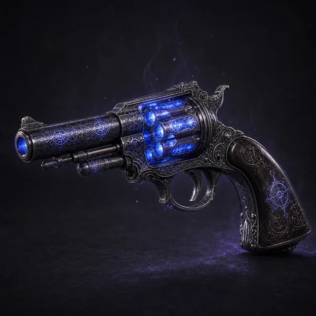

Основное оружие · Ранг 4 · Магическое · Искусность · Очень далеко · d6+13 маг · Одноручное
Перезарядка: После того, как вы совершили атаку, бросьте d6. При результате в 1 вы должны отметить Стресс, чтобы перезарядить это оружие, прежде чем вы сможете выстрелить снова.
Открыть в генераторе лута